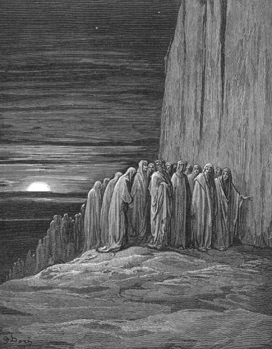

Canto XVIII
Quarta cornija - Os preguiçosos
Discurso sobre o livre arbítrio
Depois de terminar o seu discurso, o grande mestre agora me olhava, procurando saber se eu estava satisfeito com a sua explicação. E eu já desejava fazer-lhes novas perguntas, mas então pensei: "Será que essas minhas perguntas sem fim o aborrecem?". Não pude alimentar mais tal pensamento, pois Virgílio logo percebeu como eu me sentia e me incentivou a falar. Então eu perguntei:
- Mestre a tua explicação me foi muito clara, mas te peço que me definas o que é esse amor, que defendes como sendo a fonte de todo o correto agir e o seu oposto.
- Então presta atenção - respondeu-me - e terás esclarecido o erro dos cegos que decidem ser guias. A alma, que é criada com capacidade de amar, move-se para o que lhe dá prazer. Vossos sentidos extraem do mundo real uma imagem que é exibida internamente. É esta imagem que atrai a alma. E se ela é atraída, à imagem então se inclina, e esta inclinação é o amor, que faz parte de vossa natureza. E assim como o fogo se move para as alturas, buscando a sua própria natureza, da mesma forma vossa alma busca a coisa amada e não descansa até encontrá-la e dela usufruir. Podes agora entender como estão enganados aqueles que acham que qualquer amor é, em si, coisa louvável. Talvez assim pensem por acharem que sua essência é sempre boa, mas nem todo selo é bom, ainda que boa seja a sua cera.
- Teu discurso me esclareceu muitas dúvidas - respondi-lhe - mas ao mesmo tempo acrescentou outras. Se o amor vem de uma fonte externa, a alma não pode ter culpa em aceitá-lo e não pode ser, por essa razão, julgada culpada em segui-lo.
- Eu só posso te explicar aquilo que minha razão puder compreender - respondeu Virgílio -. Além da razão, terás que buscar o auxílio de Beatriz, pois se trata de obra da fé. Toda essência, esteja ela ligada ou não à matéria, tem a sua própria virtude, que não é percebida a não ser por seus efeitos, como o verde de uma planta revela-nos a sua essência viva. Não é, portanto, possível saber a origem das vossas inclinações ou do vosso instinto. Esses desejos inatos não são, portanto, nem condenáveis nem louváveis. Mas, para manter vossos instintos sob controle, tens uma virtude inata que, munida da razão, vos aconselha. É neste princípio que repousa o vosso poder de julgamento, que é capaz de rejeitar o mau amor e acolher o bom. Aqueles que, através do raciocínio, investigaram este assunto profundamente, perceberam essa liberdade inata e a partir dela, deixaram suas doutrinas morais e éticas no mundo. Então, posto que por necessidade surja em vós qualquer amor, em vós também está o poder de dominá-lo. Essa é a nobre virtude que Beatriz entende por livre arbítrio. Lembra-te disto quando tu a encontrares.
Pela posição da Lua minguante, deduzi que já era quase meia-noite. Eu, feliz por ter recebido respostas tão claras à minhas perguntas, deixei que meus pensamentos vagassem. Mas não durou muito esse estado de sono, pois logo surgiu um grupo de almas correndo, lideradas por duas que gritavam:
- Maria correu apressada à montanha! - gritou a primeira - César, para subjugar Ilerda, deixou Marselha e correu à Espanha - gritou a segunda. E os demais, correndo atrás, gritavam em seguida: - Depressa, depressa, que não se perca tempo por pouco amor!
- Ó gente que com agudo fervor agora compensais, talvez, vossa antiga negligência e preguiça, mostrai-nos o caminho para que este homem que vive possa subir quando o dia chegar.
Tais foram as palavras do meu guia. Respondeu-lhe um daqueles espíritos:
- Segue atrás de nós e encontrarás o caminho. O nosso empenho em continuar nos impede que paremos, portanto, nos perdoa se o nosso dever te parecer descortês. Eu fui abade de São Zeno em Verona, sob o império do bom Barbarossa, que Milão ainda lamenta. Lá há um homem com um pé na cova, que em breve irá lamentar o poder que teve sobre o mosteiro, pois seu filho, mal nascido, mal da mente e do corpo, lá ocupará o lugar do pastor verdadeiro.
|  |
| Os preguiçosos. Ilustração
de Gustave Doré (século XIX). |
Se ele falou mais eu não ouvi, nem teria ouvido pois a sua pressa não permitiria. O grupo passou rapidamente. Virgílio depois me chamou a atenção para os dois últimos que gritavam exemplos de preguiça:
- Antes que o Jordão visse seus herdeiros, morta já estava a gente a quem o mar se abriu. - gritou um. E o outro: - Aqueles que não tiveram coragem de acompanhar o filho de Anquise, ficaram com uma vida sem glórias.
Quando as sombras se foram, vários pensamentos surgiram na minha mente. Neles eu divaguei até que, quando meus olhos se fecharam, eles se transformaram em um sonho.
|